Psalm 137
[H] 51 513 3 3 3 3 9 3 3 3 51 3 3 3 3 3 El 3 3 El El 513 El 513 El 51 [D]
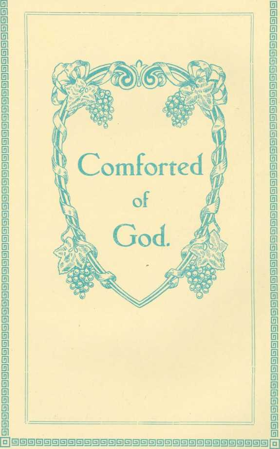[S] B]G]G]EilGJG]E]G]E]CS]GjGlG]E]SjG]S]G][S]G]G]G]G]G]GltH]tS]G]E]S]G]G]G] [H]
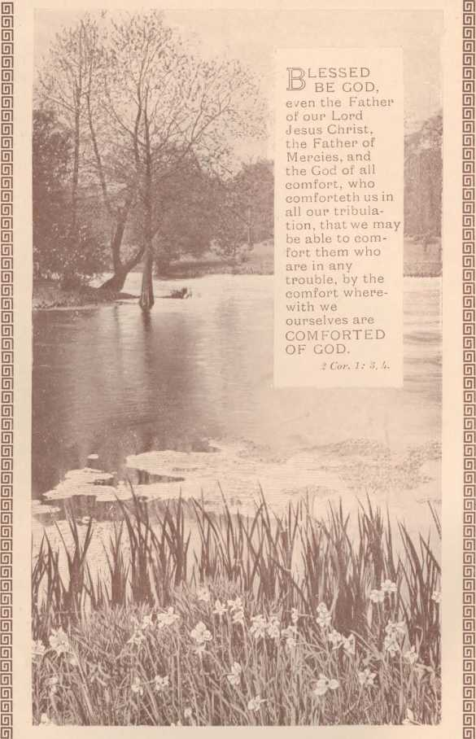"Consider the Lilies."
1 Peter v. 7.
Matt. vi. 28, 29.
mow good and kind our Father's care ! fa The words like music in the air Come answering to our whispered prayer, He cares for thee.
^)he thought great comfort with it brings, -i- Our cares are all such little things When to this truth a glad faith clings, He cares for thee.
^he pure white lilies know no care,
1 And yet they grow so grand and fair, Shedding sweet fragrance here and there
God cares for these.
Qsjreat is God's care for His dear child, v Guarding from foe and danger wild With love so strong and undefiled,
He cares for thee.
(®| nd that sweet love will on thee shine Making His home for ever thine ;
O ! the rich depths of Love Divine
He shares with thee.
Tune: ' ‘ Ombersley" (Bristol).
It was a time of sadness—and my heart, Although it knew and loved the better part, Felt wearied with the conflict and the strife, And all the needful discipline of life.
And while I thought on these as given to me, My trial-tests of faith and love to be, It seemed as if 1 never could be sure That faithful to the end 1 should endure.
And thus, no longer trusting to His might Who says "We walk by faith and not by sight," Doubting—and almost yielding to despair, 1 he thought arose, My cross I cannot bear !
Far heavier its weight must surely he Than those of others which I daily see ,• Oh, if I might another burden choose, Methinks I should not fear my crown to lose
A solemn silence reigned on all around, E'en nature's voices uttered not a sound / The evening shadows seemed of peace to tell, And sleep upon my weary spirit fell.
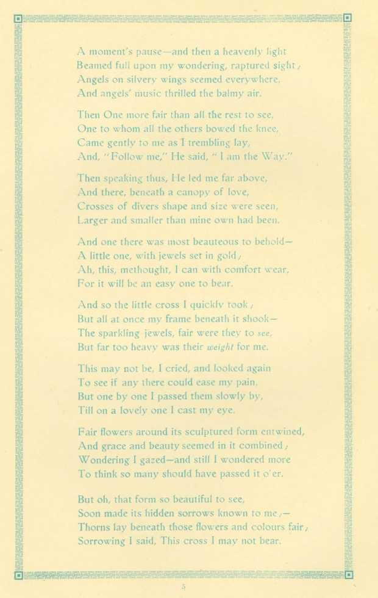This may not be, I cried, and looked agai To see if any there could ease my pain. But one by one I passed them slowly by, Till on a lovely one I cast my eye.
And so the little cross I quickly took ,-But all at once my frame beneath it shook The sparkling jewels, fair were they to see. But far too heavy was their weight for me.
Then speaking thus, 1 Ie led me far above, And there, beneath a canopy of love, Crosses of divers shape and size were seen, Larger and smaller than mine own had been.
Fair flowers around its sculptured form entwined, And grace and beauty seemed in it combined,-Wondering I gazed—and still I wondered more To think so many should have passed it o'er.
A moment's pause—and then a heavenly light Beamed full upon my wondering, raptured sight Angels on silvery wings seemed everywhere, And angels' music thrilled the balmy air.
Then One more fair than all the rest to see. One to whom al! the others bowed the knee, Came gently to me as I trembling lay, And, "Follow me," He said, "I am the Way.
And one there was most beauteous to beltold-A little one, with jewels set in gold,-
Ah, this, methought, 1 can with comfort wear, For it will be an easy one to bear.
But oh, that form so beautiful to see, Soon made its hidden sorrows known to me ,— Thorns lay beneath those flowers and colours fair Sorrowing I said, This cross 1 may not bear.
And so it was with each and ail around, Not one to suit my need could there be found ,-Weeping, I laid each heavy burden down, As my Guide gently said, "No cross—no crown."
At length to Him I raised my saddened heart: He knew its sorrows, bid its doubts depart,— "Be not afraid," He said, "but trust in me, My perfect love shall now be shown to thee."
And then, with lightened eyes and willing feet, Again I turned my earthly cross to meet, With forward footsteps, turning not aside, For fear some hidden evil might betide.
And there, in the prepared, appointed way, Listening to hear, and ready to obey, A cross I quickly found of plainest form, With only words of love inscribed thereon.
With thankfulness I raised it from the rest, And joyfully acknowledged it the best,-The only one of all the many there, That I could feel was good for me to bear.
And while I thus my chosen one confessed,
I saw a heavenly brightness on it rest, And as I bent my burden to sustain, I recognised my own old cross again 1
But oh, how different did it seem to be, Now I had learned its preciousness to see I No longer could I unbelieving say,-Perhaps another is a better way.
Ah, no I henceforth my one desire shall be, That He who knows me best should choose for me. And so, whate'er His love sees good to send, I'll trust is best— because He knows the end.
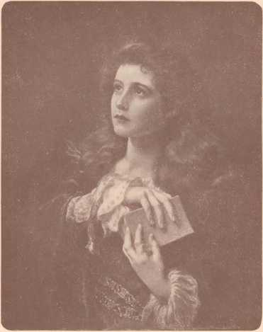living bright reality!
J^ore present to jjpiths vision been Ijfliait any ontwartl object seen,
Ipian e’en the sweetest earthly tie
Psalm 137
“ iijET will I not forget thee,” My cherished one. Mine own, I Will not leave thee comfortless, life's path to tread alone, 1 is better that those outstretched hands, those clinging hands of thine Be loosed, beloved, from every clasp of other hands but mine. Though earthly loves and earthly hopes afar from thee be set, Remember still. My chosen one, thee will I not forget.
“ tjET will I not forget thee,” though thou hast oft forgot, And turned unheeding from My voice. My words obeying not: Yet with Mine own, my dying soul, I bore away thy past;
I took thy sin upon my heart, which broke for thee at last.
But on this heart for ever, let thou thy love be set, Thy name engraven on these hands, thee will I not forget.
Made perfect thro’ My loveliness wrapt round a wandering child.
1 will forget thy wanderings, I will forget thy sin ;
And cast them all behind My back, as though they ne’er had been. But thee My sealed, My chosen, on whom My love is set I’ve love alone toward thee—how can I then forget.
M^jET will I not forget thee,” m mine own garden bowers, I water every moment the humblest fragrant flowers.
For mine own Royal Diadem, for My celestial crown.
There waiteth still some precious gems of fair and bright renown. And when I wreathe My flowers, and when My gems are set In heaven's glory on My brow, “ thee will I not forget.”
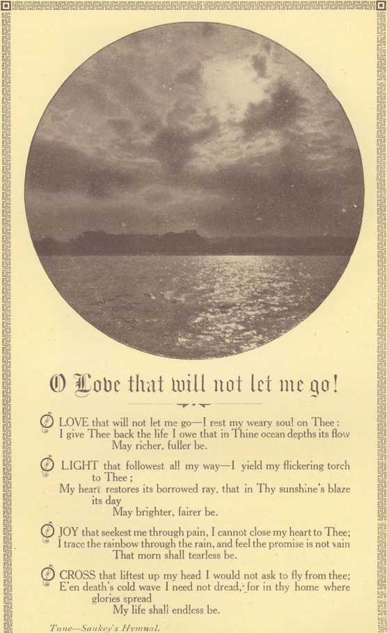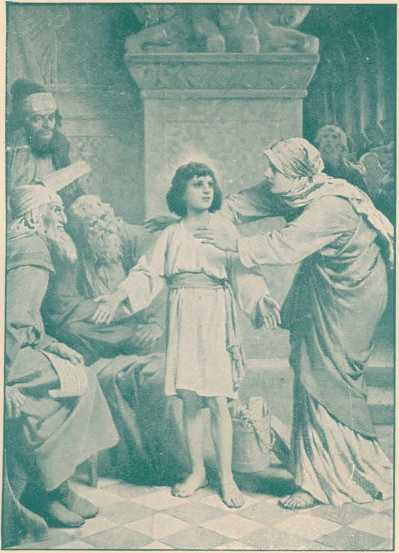HEN Jesus was tw?lve years old. his parents went to Jerusalem /d j/< J after the custom of the feast. And as they returned the child
■ I ■Jr'l tarried behind: and Joseoh and his mother knew it not, sup
posing him to have been in the company. After a day's journey they sought him, and when they found him not they turned back again to Jerusalem.
And it came to pass, that, after three days they found him in the midst of the religious rulers, both hearing them and asking them questions, while all who heard him were astonished at his intelligence.
And when his parents saw him they were amazed and his mother said “Son, why hast thou thus dealt with us? Behold we have sought Thee in anguish of spirit.” “Why is it that you have been searching for me?” he replied, "wist ye not that I must be about my Father's business.” But they understood him not, but his mother kept all these sayings in her heart.
They returned to Nazareth and he was subject unto them and Jesus increased in wisdom and stature, and in favor with God and man.
Luke
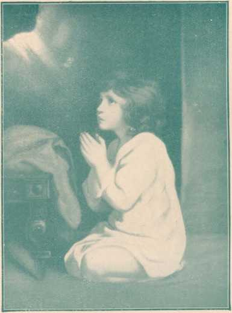The child Samuel answered “ Speak, I.ord ; for thy servant heareth.”
I Sani. 3.
HUSHED was the evening hymn, the temple courts were dark;
The lamp was burning dim before the sacred ark : When suddenly a voice Divine, rang through the silence of the shrine. OH give me Samuel's ear—the open ear 0 Lord ;
Alive and quick to hear each whisper of thy word ; Like him to answer at thy call, and to obey Thee first of all.
OH give me Samuel's heart! —a lonely heart that waits
When in Thy house Thou ar< ; or watches at Thy gates By day and night—a heart that still moves at the breathing of Thy will. O\H give me Samuel's mind ! a sweet, unmurmenng faith,
1 Obedient and resigned to Thee in life and death:
Thal I may read, with childlike eyes, truths that are hidden from the wise.
Tune—Sankey's Hymna'.
(ioti mobi's in a mimtertmis man
GOD moves in a mysterious way, His wonders to perform ;
He plants His footsteps in the sea, And rides upon the storm.
DEEP in unfathomable mines Of never-failing skill,
He treasures up His bright designs, And works His sovereign will.
YE fearful saints, fresh courage take ; The clouds ye so much dread
Are big with mercy, and shall break In blessings on your head.
JUDGE not the Lord by feeble sense, But trust Him for His grace;
Behind a frowning Providence He hides a smiling face.
HIS purposes will ripen fast, Unfolding every hour;
The bud may have a bitter taste, But sweet will be the flower.
BLI N D unbelief is sure to err, And scan His work in vain ;
God is His own interpreter, And He will make it plain.
,'O,” said the lawyer, “I shan’t press your claim 1i against that man ; you can get someone else to take 1 the case, or you can withdraw it, just as you please.
There would probably be some money in it, but it would, as you know, come from the sale of the little (‘.Cri house the man occupies and calls ‘ home *; but I don’t want to meddle with the matter, anyhow.”
I suppose likely the old fellow begged to be let off ?”
“ Well—yes, he did.”
And you ?”
“ I didn’t speak a word to him.”
“ Oh, he did all the talking, did he ? What did you do ?”
‘ I believe I shed a few tears ; he didn’t speak a word to me.” “ Well, may I respectfully inquire whom he did address in your hearing ?”
” Almighty God. But, not for my benefit in the least. You see” — the lawyer crossed his right foot over his left knee, and began stroking his lower leg up and down, as if to help state his case concisely—“you see, I found the little house easily enough, and knocked on the outer door which stood ajar, but nobody heard me ; so I stepped into the little hall, and saw through the crack of another door just as cosy a sitting room as there ever was.
“ There, on a bed, with her silver head way up high on the pillows, was an old lady. I was on the point of knocking, when she said, as clearly as could be, ‘ Come, father, now begin ; I’m all ready’—and down on his knees by her side went an old white-haired man, still older than his wife, I should judge ; and I couldn’t have knocked then. He began to pray ; first he reminded God they were still his submissive children, mother and he, and no matter what He saw fit to bring upon them, they should’nt rebel at His will; of course ’twas going to be very hard for them to go out homeless in their old age, specially with poor mother, so sick and helpless, but still they’d seen sadder things than ever that would be. He reminded God, in the next place how different it might have been if only one of their boys had been spared them ; then his voice kind of broke, and a thin white hand stole from under the coverlet and moved softly over his snowy hair ; then he went, on to repeat that nothing could be so sharp again as the parting with those three sons
—unless mother and he should be separated. But at last he fell to comforting himself with the fact that the dear Lord knew it was through no fault of his own that mother and he were threatened with the loss of their dear little home, which meant beggary, in a place they prayed to be delivered from entering, if it could be consistent with God's will ; and then he fell to quoting a multitude of promises concerning the safety of those who pul their trust in the Lord. Yes, I should say he begged hard ; in fact, it was the most thrilling plea to which I ever listened ; and at last he prayed for God's blessing on those who were about to demand justice. ' The lawyer stroked his lower limb in silence for a moment or two, then he continued, more slowly than ever : “ And—I—believe—I’d rather go to the poorhouse myself, to-night, than to stain my heart and hands with the blood of such a prosecution as that.”
“ You are afraid to defeat the old man's prayer ? ” queried the client.
“ Bless your soul, man, you couldn’t defeat it!” He left it all subject to the will of God ; but he left no doubt as to his wishes in the matter ; claimed that we were told to make known our desires unto God, but of all the pleading I ever heard, that beat all. You see, I was taught that kind of thing in my childhood ; and, why I was sent to hear that prayer, I’m sure I don’t know ; but I hand the case over.”
I wish,” said the client, twisting uneasily, ” you hadn’t told me about the old fellow’s prayer, because I want the money the place would bring ; but I was taught the Bible when I was a youngster, and I’d hate to run counter to such an harangue as that you tell me about. I wish you hadn’t heard a word of it , and another time I wouldn’t listen to petitions not intended for my ears.”
The lawyer smiled.
“ My dear fellow,” he said, “ you’re wrong again ; it was intended for my ears, and yours, too, and God Almighty intended it. My old mother used to sing about God's moving in a mysterious way, I remember.”
“ Well, my mother used to sing about it too,” said the claimant, as he twisted his claim-papers in his fingers. “ You can call in the morning, if you like, and tell ‘ mother and him ’ the claim has been met.”
“ In a mysterious way,” added the lawyer, smiling.
HiSSSWSMSHWSHHHSSHSMHKSSSKB
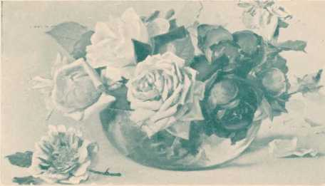Mark 14: S, 9.
T IS NOT OUR PRIVILEGE to come into personal contact with our dear Redeemer, but it is our privilege to anoint the Lord's “brethren'' with the sweet perfume of love, sympathy, joy and peace, and the more costly this may be as
:: ■
respects our self-denials, the more precious it will be in the estimation of our Elder Brother, who declared that in proportion as we do or do not unto His brethren, we do or do not unto Him. Our alabaster boxes are our hearts, which should be full of the richest and choicest perfumes of good wishes, kindness and love toward all, but especially toward the Christ—toward the Head, our Lord Jesus, and toward all the members of His body, the Church ; and especially on our part toward the feet members who are now with us, and on whom we now have the privilege of pouring out the sweet odours of love and devotion in the name of the Lord, because we are His.
F takes great love within the loyal heart To live beyond the others and apart,-A love that is not shallow, is not small, Is not for one or two, but is for all. Love that can wound love, for its highest need ,-Love that can leave love, though a heart may plead. Love that can choose the right and leave the wrong,-And breathe in hope and joy the victor's song,-A love that will not waver, that will find Just what it means to suffer and be kind.
IT takes great love to conquer self and pride, And swim against the swift and evil tide,-
A love that wends its course to that grand height Where dwells our God, enthroned in wondrous light,-Like that great love our Lord did sweet express, So strong in faith and patient tenderness.
Yea, like the glowing sun, this Love must live, Moved by one burning deathless force—to give. Love, faith and courage,- courage, faith and love, Of such are God's victors crowned from above.
^hp Jiingboin Como!
Thv Kingdom come ! the cry gone forth, in every land, east, west, south, north, From age to age, two thousand years, the cry gone forth with pleading tears.
Thy Kingdom come ! what meaneth this? doth it spell woe or happy bliss. Dread and pain, and depth of sonow, or doth it tend a glad to-morrow ?
Thy Kingdom come ! the pomp of earth have counted little on Thy worth !
And still they laugh with vain derision, and turn their eyes from such a vision.
Thy Kingdom come Thy will be done ! the time speeds on as with the sun. This means that earth—so clearly told—a wondrous change will now behold.
And why ? Remember how it rang, the message that the angels sang— "Goodwill to men, and peace on earth," which means io all another birth.
For He must reign who died for all, till friend and foe. and great and small. Are back again from their death sleep ; He gave His life to save His sheep.
No more they’ll hear the awful din of selfishness and war and sin: For rank a d file of every nation will flow to God—a new creaiion.
The prophecies, to be fulfilled, speak of the land when it is tilled.
Will yield like some transcendent story, delights of unsurpassing glory 1
Far. far beyond all human thought, laden with riches and pleasures fraught, Reserved for those who bow the knee to Him who died on Calvary.
Thy Kingdom come 1 who will not pray in this dark world of sin and say: — O may it come O let there be one will alone ; He lives for me.
E’en now before the sun shines bright, before the flooding of the light 1 There're blessings great and grand and fair, the Truth to know, a life to share.
And best of all that deep’ning love, ten thousand times a mother's love 1 Surpassing all the fondest dream that links with us the great Supreme 1
Mat. 6: io. .
ND all through the mountains, thunder riven,
Tune—Sankey's Hymnal.
cry to the gate of heaven: have found My sheep!" angels echoed around the throne, for the Lord brings back His own.
"Rejoice! I And the Rejoice!
And up from the rocky steep, There arose a
tN the East the Good Shepherd -*• is known by his faithful watch— care over his sheep, which is exercised at the constant risk of personal danger. Under this figure the great sacrifice of Jesus is seen with illustrious force and beauty. Through the merit of Redemptive Sacrifice “the lost sheep,” as represented by “all in Adam" will be raised from the dead and be granted the gracious opportunity of attaining to human perfection, the basic characteristics of which are meekness, docility and obedience to the “Good Shepherd.” The result will be eternal life on the perfect earth.
Isa. 53. Luke 2 : 8-lk. 2 Cor. S .- 9. Phil. 2 : 5-11. Isa. 35.
HERE were ninety-and-nine that safely lay In the shelter of the fold,
But one was out on the hills away
Far off from the gates of gold:—
Away on the mountains wild and bare, Away from the tender Shepherd's care.
ORD Thou hast here Thy ninety-and-nine, Are they not enough for Thee?
But the Shepherd answered "This sheep is Mine
Which has wandered away from Me."
And although the road was so rough and steep He went to the desert to save His sheep.
■)UT none of the ransomed ever knew
TT) How deep were the waters crossed;
<—■ Nor how dark was the night the Lord passed through Ere He found His sheep that was lost:
Out in the desert He heard its cry — Sick and helpless and ready to die.
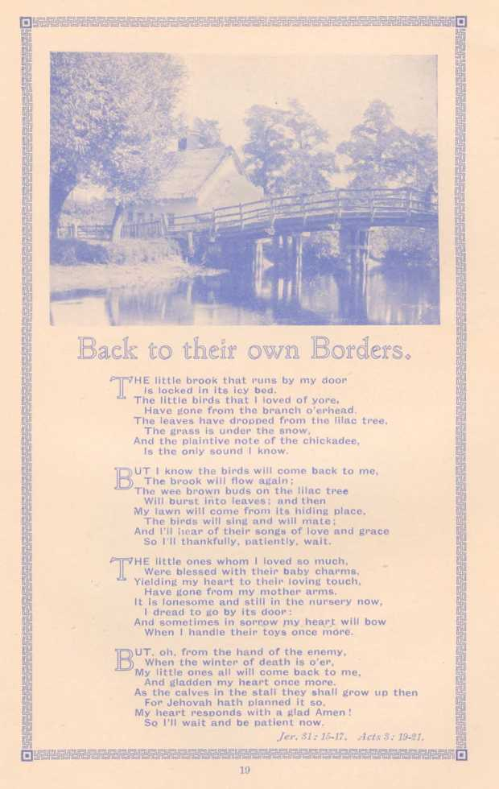I handle their toys once mdre.
When
from the hand of the enemy, the winter of death is o’er.
rHE little brook that runs by my door
Is locked in Its icy bed.
The little birds that I loved of yore, Have gone from the branch o’erhead.
The leaves have dropped from the lilac tree.
The grass is under the snow,
And the plaintive note of the chickadee, Is the only sound I know.
UT. oh. When
'HE little ones whom I loved so much. Were blessed with their baby charms, Yielding my heart to their loving touch, Have gone from my mother arms.
It is lonesome and still in the nursery now, I dread to go by Its door:
And sometimes in sorrow ,my heart will bow
UT I know the birds will come back to me,
; The brook will flow again;
The wee brown buds on the lilac tree
Will burst into leaves; and then
My lawn will come from its hiding place. The birds will sing and will mate ;
And I’ll hear of their songs of love and grace So I'll thankfully, patiently, wait.
My little ones all will come back to me, And gladden my heart once more.
As the calves in the stall they shall grow up then For Jehovah hath planned it so, My heart responds with a glad Amen !
So I’ll wait and be patient now.
Jer. 31: 15-17. A cis 3 : 19-21.
“ jJjHEN first I heard of Jesus so marred upon the tree, I felt no glad emotion as though He died for me !
I saw no kingly beauty, majestic, grand or brave, I turned away despising His proffered aid to save.
“ JgUT when I came to know Him, His precious name grew sweet. And like the tinted rainbow, love arched the Mercy seat ;
And when—O wondrous glory—light shone from His dear face, All other objects faded before His matchless grace.
“ QND when the joyful tidings, how God's Beloved Son Will raise the dead in Adam, bless each and every one. What could I do but praise Him, make vault of heaven ring! And own Him as my choicest—Redeemer, Lord, and King.
“ Q Rose of rarest odour I O Lily, white and pure !
C? O Chiefest of ten thousand whose glory must endure 1 The more I see Thy beauty, the more I know Thy grace, The more I long, unhindered, to gaze upon Thy face ! ”
. We are Sowing
7TYe are sowing, ever sowing, Something good or something ill, In the lives of those around us, We are planting what we will.
ot a word for God falls fruitless, Not a thought for Him decays ;
Every fragrant precious blossom, Will be found in future days.
hen the very hand that sowed them, Shall have gone with Him to be;
Still the record of their sowing, Will be seen eternally.
Tyrant then, Lord of all the harvest, That the seeds we daily sow, May refresh the hearts of others, Spreading blessings as they grow.
ay each thought and word and action, Bring the fruit of Christian love :
To be found in coming ages, In thy garner house above.
reasured there in thine own keeping, To thine own eternal praise, Happy ending to our sowing—
Endless joys of fruitful days.
Gal
Matthew 26 : 6—13.
gO NOT keep the alabaster boxes of your love and tenderness sealed up until your friends are dead. Fill their lives with sweetness. Speak approving, cheering words while their ears can hear them and while their hearts ean be thrilled lade happier by them ; the kind things you mean to say when are gone, say them before they go. The flowers you mean to send for their coffins, send to brighten and sweeten their homes before they leave them. If my friends have alabaster boxes laid away, full of fragrant perfumes of sympathy and affection, which they intend to break over my dead body, 1 would rather they would bring them out in my weary and troubled hours and open them, that I may be refreshed and cheered by them when I need them. 1 would rather have a plain coffin without a flower, a funeral without an eulogy, than a life without the sweetness of love and sympathy. Let us learn to anoint our friends beforehand for their burial. Post-mortem kindness does not cheer the burdened spirit. Flowers on the coffin east no fragrance backward over the weary way.
IMMANUEL'S
zj. HE sands of time are sinking, V The dawn of heaven breaks, The summer morn we've longed for: The blest sweet morn awakes: — Dark, dark hath been the midnight But dayspring's now ar hand, And God's own glory dwelleth In fair Immanuel's Land.
Ig>ORNE on the tide of evil
Are sorrows, wrong and shame, Earth's proud ones have rejected God's Word and precious Name: Where He has set the noblest, They've stamped their foulest brand. But judgment shines like noonday In fair Immanuel's Land.
£>EEP waters overflowed me, L* The thorns around were sharp:
Now these lie all behind me
And praise swells from my harp — Whence flows the song of ages, With yon celestial strand, Where love in fulness dwelleth
In fair Immanuel's Land.
COON shall the streams of glory Dissolve earth's bitt'rest woes. Soon shall the desert briar
Be changed to Eden's Rose,-Soon shall the earth in gladness, Proclaim the Truth now banned, Oh, hail the glory gleaming
In fair Immanuel s Land.
z£HERE! there the Rose of Sharon V Unfolds its full heart's bloom, And fills the air of heaven With rapturous perfume: There through eternal ages The fragrance rare is fanned, Distilling glory ever In fair Immanuel's Land.
zkHE King's transcendent beauty
Y Unveiled there is seen:
It were a well-spent journey Though sev'n deaths lay between.
The Lamb with his_Beloved Doth on Mount Zion stand, In glory which excelleth, In fair Immanuel's Land.
OF Christ who is the fountain, The deep sweet well of love: '*How oft its joys we've tasted, More deep we’ll drink above: There to an ocean fulness His goodness doth expand— 'Tis ' glory unto glory' In fair Immanuel's Land.
OJOY! what bliss to meet Him, w No longer here to roam, '“'My Lord says, "Come up higher. Beloved welcome home! "The palace in its splendour, So beautiful and grand!
Ah! glory—glory dwelleth In fair Immanuel's Land.
Used bv fiertnission of Alexander Hasse, 31, Commercial Street, Leeds. Eng,, the Publisher of the large Engraving.
THE LaTSST SUPPER. ^«.-;.
zi'HE beat of the day is over, the hour is growing late, V* And many weary pilgrims press through the city gate, Eager to find a lodging within its sheltering wall Ere the rapid sunset vanish and darkness reigns o’er all. Oh sight to glad the spirit ! Oh rest for weary eyes To see the lofty temple high o’er the city rise !
In every Jewish household the solemn feast is spread. The Paschal moon has risen, her silver light is shed Over the glad Jerusalem, its temple grand and fair ; The presence of Jehovah seems round them everywhere ; And the dear Lord is among them, and many heed it not; He in a borrowed upper room, unheeded and forgot;
He with His loved disciples, keepeth the feast with them ; The Lord of all is dwelling in great Jerusalem.
Let us leave outside the city, in its shadows deep and dim, To rest awhile with Jesus and keep the feast with Him.
£HE artist lifts the curtain, we are with the Master now ; *4* We see the look of sadness upon His kingly brow. Surrounded by His loved ones, there, in that quiet place, Surprise, and fear, and sorrow are seen on every face. The evening lamp now lighted, from vaulted roof is hung, A gentle soothing radiance o’er all the group has flung ; Its sevenfold rays descending, a halo bright has shed, Falling in silvery beauty about the Master's head. The last rays of the sunset, beyond the open door, Reveal the faithful Marys, who gaze around with awe.
ztHE servant of the good man, bearing the meal away : S' They all have heard the Master these words in anguish say “ One of you shall betray Me and as the accents fall, Those sad eyes full of sorrow, look round upon them all. “ One of you shall betray Me,”—we seem to hear them cry, Even the voice of Judas joins with them, “ Is it I ? ” Have they not learned the lesson, “ The greatest shall be least ” ? Has not that dear One cleansed them, with whom they kept the feast? And spoken words of comfort to all their company ?
And now He tells them sorrowing, that “one betrayetn Me.” r^HE water and the pitcher, the towel, all are there—
Has not that sad voice told them each other's griefs to share. The manna pot upon the pier, dear to each pious Jew, Telling of all those wanderings his fathers had passed through, That has a voice for you and me, saying—The bread of life For us was broken to sustain all through this earthly strife, The unleavened bread upon the board, the cup and dish we see, Bring back the words of love—“ Do this in memory of Me.” Beneath the arch upon the pier, upon the other hand, We see a fast expiring lamp, and then we understand That symbol that the Saviour's life will very soon be o’er, And in that borrowed upper room they will meet nevermore. The palm branch set aside we see, token sweet of victory That speaks of joyous Olivet, and not of Calvary ;
Soon will those voices heard again join in the awful cry, Those glad hosannas all forgot for shouts of “ Crucify.” 7tXE know the awful story of suffering and pain ; vAJ Oh, let us shut the world outside and ponder it again. We know ere the morrow’s sunset will those gentle tones be stilled ; That form on which they’re gazing will a borrowed grave have filled ; That moon which lights the city will light up a cross of shame, And those who profess to love Him will fear to own His name ! The sun withhold its shining, and darkness all will shroud, And the voice now speaking sadly be lifted clear and loud;
And the mocking ones will hear it, “ Why hast Thou forsaken Me ? ” As that loving heart is broken on gloomy Calvary.
ftxE’LL ne’er forget the picture, the Saviour's look of pain, CU We shall often think upon it, and ponder o’er again : That lesson that the artist has taught to you and me. The words the Lord is saying to that sad company Will come to us when all around is hurry, care, and din— A gentle warning, lifting us above this world of sin, Oh, let us ask His guidance, that even you and I May gather round Him in that land to praise eternally ; To be in those fair mansions where He has gone before, This world of change all left behind, and blest for evermore.
s
'-5.
'?
■f.
L.-
->- THE CAhF’S PflTM ■-<
®ne day, through the primeval wood, A calf walked home as good calves should: But made a trail all bent askew, A crooked trail as all calves do.
Since then three hundred years have fled, And 1 infer the calf is dead :
But still he left behind his trail— And thereby hangs my moral tale.
TThe trail was taken up next day,
** By a lone dog that passed that way:
And then a wise bell-wether sheep Pursued the trail o'er vale and steep, And drew the flock behind him too, As good bell-wethers always do.
from that day o'er hill and glade,
—■ * Through those old woods a path was made: And many men wound in and out, And dodged and turned and bent about, And uttered words of righteous wrath, Because 'twas such a crooked path, But still they followed—do not laugh— The first migration of that calf.
ilAow l^at f°rest Path became a lane,
■■ • That bent and turned and turned again.
The crooked lane became a road, Where many a poor horse with its load Toiled on, beneath the burning sun, And travelled some three miles in one,-
And thus a century and a half They trod the footsteps of a calf.
TThc years passed on in swiftness fleet
** The road became a village street.
And this, before men were aware— A city's crowded thoroughfare.
And soon the central street was this
Of a renowned metropolis :
And men two centuries and a half, Trod in the footsteps of a calf.
ipach day a hundred thousand rout
Followed the zig-zag calf about,-
And o'er the crooked journey went
The traffic of a continent, A hundred thousand men were led
By one calf now three centuries dead, They follow still his crooked way,
And lose one hundred years a day— For thus such reverence is lent
To well established precedent.
’|KJ°w as we P°nc^er o er (h's ta^e
•'1 We can perceive another trail
How men are prone to follow blind
Along the calf-paths of the mind, And work away from sun to sun. To do what other men have done They follow in the beaten track
And out and in and forth and back And still their devious course pursue
To keep the paths that others do— But soon they'll learn a wiser way
For Io ! There dawns the perfect day.
Isaiah 59 : S. 26, 9. 11: 1-9.

time is coming, th<
of Jubilee,
he boast of haughty tyrants
shall fill the air.
But age and youth will love the truth, and speed it everywhere,
No more from want and sorrow shall
the hopeless cry.
shall cease and perfect peace will flourish by and by.
glorious time is coming, the morning promised long,
When truth and right with holy might, shall overthrow the wrong When Christ the Lord and rightful king, empowered from on high Will stretch his hand throughout the land, with justice by and by.
With shout and song 'twill sweep along, like billows of the set The joyfulness of nations shall ring through earth and sky.
This day of grace draws on apace—O happy by and by 1 he glories of Christ's kingdom we gladly watch and pray, \ Till o'er the height the morning light shall drive the gloom away. For when the balm of healing shall reach mankind from high. They’ll turn toward their precious Lord and love Him by and by.
CHRIST'S GLORIOUS KINGDOM!
THERE’S a wideness in Gori's mercy, Like the wideness of the sea ;
There's a kindness in His justice, Though severe His judgments be.
For the love of God is broader
Than the measure of man's mind, And the heart of the Eternal
Is most wonderfully kind.
zxhe poet has beautifully expressed the heart sentiments of Bible Students, S' who are rejoicing that the present dark night of weeping is about to give ’ place to a morning of joy, as a brief survey of the chart above will show.
—Psa. 30, 5. Hob. 2, 2. Rom. 13, 12. Eph. 3, 11.
zSThe ' World that was ’ existed from the fall of Adam to the flood. That S' Dispensation was under the domination of angels, many of whom fell ’ from Divine favour.—Gen. 6. Jude 6. 2 Peter 2, 4, 5.
✓37 he ‘ present evil Worid ’ is controlled by Satan, whose empire is a vast S' system of iniquity, entailing sorrow, strife, disease, and death ; how ’ true it is—“ the whole creation groaneth and travaileth in pain together until now.”—Rom. 8, 22. Eph. 2, 2. 2 Cor. 4, 4. Gal. 1, 4.
zphe 1 World to come ’ will have Divine supervision. Evil will be no more, s) and righteousness, peace, joy and love will flow on through the ages of 1 eternity.—Isa. 65, 17-19. Rev. 5, 13 ; 21, 1-4 ; 22, 1-3.
^7 he Patriarchal and Jewish Ages mark God's dealing with Abraham, Isaac, S' Jacob, and the Jewish Race, to whom wonderful promises of deep ’ import were given.—Gen. 22, 15-18. Ex. 19, 3-6. 1 Cor. 10, 11.
$7he Gospe! Age commenced at our Lord's baptism at Jordan, and extends S' to his second advent. During this period God has been dealing with ’ “ the little flock ” who have gladly followed in the sacrificial steps of the beloved Master.—Luke 12, 22-37. Rom. 8, 14-19. Eph. 1, 4-14.
zi^he Millennial Age is truly a wonderful period, as it will witness the resur-O rection of every man, woman and child, who have died in Adam. In ’ coming back from the condition of death (Eccle. 9, 10) they will have the glorious opportunity of KNOWING GOD and His dear Son who died for them. This knowledge will mean eternal life to the willing and obedient. O jov to the earth when Messiah reigns ! THE TIME IS AT HAND and will follow the trouble now enveloping the whole earth.— Zcph. 3, 8, 9. John 5, 25-9 ; 17, 5. Isa. 26, 9. 1 Chr. 16, 23-36.
(See Literature of The Watch Tower Bible and Tract Society).
Weeping inoy endure for a night
(Jut joy cometh in the morning.J
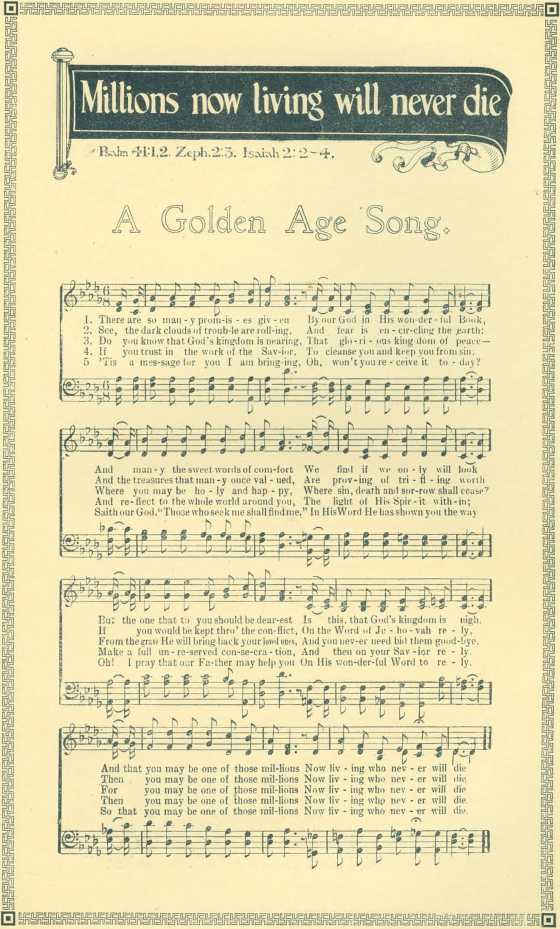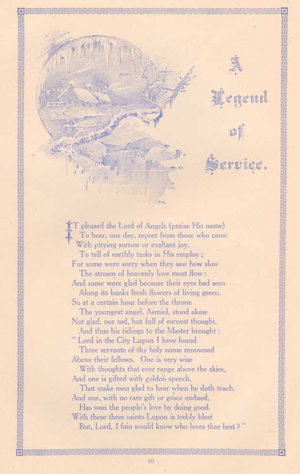And
glad because their eyes had
gifted with golden speech,
And
YT pleased the Lord of Angels (praise His nam< To hear, one day, report from those who car With pitying sorrow or exaltant joy.
To tell of earthly tasks in His employ ;
For some were sorry when they saw how slow The stream of heavenly love must flow :
Along its banks fresh flowers of living green.
So at a certain hour before the throne
The youngest angel, Asmiel, stood alone Not glad, nor sad, but full of earnest thought.
And thus his tidings to the Master brought:
“ Lord in the City Lupon I have found
Three servants of thy holy name renowned
Above their fellows. One is very wise With thoughts that ever range above the skies,
That make men glad to hear when he doth teach. And one, with no rare gift or grace endued,
Has won the people's love by doing good.
With these three saints Lupon is trebly blest But, Lord, I fain would know who loves thee best ?
x£*HEN spoke the Lord of Angels, before whose look \i/ The hearts of all are like an open book, “In every soul, the secret thought I read And well I know who loves me best indeed.
But every life has pages vacant still, Whereon a man may write the things he will ;
Therefore I read in silence day by day, And wait for hearts untaught to learn my way.
But thou shalt go to Lupon, to the three Who serve me there, and take this word from me, Tell each of them his Master bids him go Alone to Spirans huts across the snow. There he shall find a certain task for me, But what, I do not tel! to them nor thee.
Give them the message, make my word the test, And crown for me the one who answers best.”
ORTH WITH the angel obedient and elate, 1/ Passed the self-same hour through Lupon's gate.
First to the temple door he made his way And there, because it was a huly day, He saw the folk by thousands thronging, stirred
By ardent thirst, to hear the preacher's word.
Then, while the echoes murmured Bernol's name, Through the aisles that hushed behind him Bernol came.
Strung to the highest pitch of conscious might, With lips prepared and firm and eyes alight, One moment at the pulpit steps he knelt
In silent prayer, and on his shoulders felt
The angel's hand :—“ The Master bids thee go Alone to Spirans huts across the snow,
To serve Him there.” Then, Bernol's hidden face Went white as death, and for about the space
Of ten slow heart-beats there was no reply,
Till Bernol looked around and whispered—“ Why ? ” But answer to his question came there none :
The angel sighed, and with that sigh was gone.
^ITHIN the humble house, where Malvin spent His studious years, on holy things intent, Sweet stillness reigned, and there the angel found The saintly sage immersed in thought profound.
Weaving with patient toil and willing care A web of wisdom, wonderful and rare ;
A beauteous robe for truth's great bridal meet, And needing but one more thread to be complete.
Then Asmiel touched his hand and broke the thread Of fine spun thought, and very gently said,— The One of whom thou thinkest bids thee go Alone to Spirans huts across the snow
To serve Him there.” With sorrow and surprise Malvin looked up. reluctance in his eyes.
The broken thought, the strangeness of the call, The perilous passage of the mountain wall Appalled him. With a doubtful brow
He scanned the doubtful task and muttered—“How?” And Asmiel answered, as he turned to go, With sad disheartened voice : “ I do not know!”
OW as he went with fading hope to seek
Z The third and last to whom God made him speak, Scarce twenty steps away whom should he meet But Fermor, hurrying cheerful down the street.
With ready heart that faced his work like play, And joyed to find it greater every day,
The angel stopped him with uplifted hand, And gave without delay, his Lord's command.
“ He, whom thou servest, would'st have thee go Alone to Spiran's huts across the snow
To serve Him there.” Ere Asmiel breathed again The eager answer leaped to meet him—“When ?”
The angel's face with inward joy grew bright, And all his figure glowed with heavenly light,
He took the golden circlet fron his brow
And gave the crown to Fermor, answering—“Now ! ” For thou hast met the Master's hidden test,
And I have found the man who loves Him best;
Not thine, nor mine, to question or reply. When He commands us, asking ‘How?’ or ‘Why?’ ;
He knows the cause ; His ways are wise and just, Who serves the King, must serve with perfect trust.”
* Thoughtlessly the maiden sung; • Fell the words unconsciously from her girlish, gleeful tongue.
Sang as little children sing, sang as sing the birds in June,
Fell the words like light leaves down on the current of the tune.
"Let me hide myself in Thee!"—Felt herself no need to hide, Sweet the song as sweet could be, and she had no thought beside.
All the words unheedingly fell from lips untouched by care, Dreaming not that they might be on some other lips a prayer.
"Rock of ages cleft for me !"—’Twas a woman sung them now, Pleadingly and prayerfully, every word her heart did know.
Rose the song like storm-tossed bird beats with weary wing the air Every note with sorrow stirred, every syllable a prayer!
"Rock of ages cleft for me!,/—Lips grown aged sang that hymn, Trustingly and tenderly, voice grown weak and eyes grown dim.
* I am hidden safe in Thee ” trembling though the voice and low Ran the sweet strain peacefully, like a river in its flow.
Sung as only they can sing whose life's thorny path have pressed, Sung as only they can sing who behold the promised rest!
" Rock of ages cleft for me!"—sung above a coffin lid, Underneath all restfully all life's joys and sorrows hid.
Nevermore, 0 storm-tossed soul, nevermore from wind or tide, Nevermore from billows roll wilt thou need thyself to hide.
Could the sightless sunken eyes closed beneath the soft grey hair, Could the mute and stiffening lips move again in pleading prayer
Still, aye, still, the words would be—“ Rock of ages cleft for me!”
NSTEAD of the thorn there shall come up the fir tree,
Instead of the brier the myrtle shall spring,
Back to the glory and freshness and beauty,
God will creation triumphantly bring.
Streams o'er the land will gladly be swelling,
The flowers in the desert a fragrance shall shed,
The mountains and valleys shall sweetly be telling
That Jehovah our God is ruling instead.
Isaiah 55 : 13.
/fix LONE in the garden—His chosen are sleeping—
The sinless Redeemer how meekly he kneels!
His burning entreaty, His sorrow and weeping
To the heart of Jehovah, His anquish reveals.
“ Not my will, O Father, but Thine I have taken!"
Though heavy the stroke that must fall on His head
He goes to the cross to be cursed and forsaken
To give us the cup of salvation instead.
Isaiah 53.
BUT now we'll rejoice for the glad day is nearing,
For which all creation travaileth in pain,
When Christ our Redeemer in glory appearing
Shall take to Himself, His great power and reign:
Then Satan no more his evil extending,
For all over earth Christ's Kingdom shall spread.
With fulness of joy the song e'er ascending
That Jesus Immanuel is ruling instead.
Isaiah 9: 6, 7.
Vol. 7 581
THE
IN
s
s
Ezek.
41 :7
£
H
ii
4
H
t’ 'll
53
■?
Still upward to the highest!
^jtill upward to the highest realm, To life so full and free ;
A place with me within my throne, Mid anthem choirs of purest tone, No greater glory could be shown— Such prayers unite for thee !
Still upward—where my Father dwells, Through paths thou hast not known, Beloved kept by power divine, Whilst beams of light upon thee shine, An outstretched hand tight-clasped in mine, Thou walk'st with me alone.
Still upward though thou stumble oft, And trials grieve thy soul, Press on with joy to know my mind, The golden gate of life to find, To suffer long and e’er be kind— Till faith hath cleansed thee whole.
Still upward—then let hopeful songs 1S5’ Fill hallowed courts above 1
Still upward ! onward ! honour me ! Whilst truth and mercy comfort thee, Till—token of thy victory— Thou knowest God's great Love.
a
'll
L;
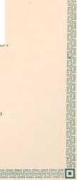In the minister's morning sermon, He told of the primal fall, And how thenceforth the wrath of God Rested on each and all.
And how, of His will and pleasure, All souls, save a chosen few, Were doomed to eternal torture, And held in the way thereto.
Yet never, by faith's unreason, A saintlier soul was tried. And never the harsh old lesson A tenderer heart belied.
And after the painful service, On that pleasant, bright first day, He walked with his little daughter Through the apple bloom of May.
Sweet in the fresh green meadow Sparrow and blackbird sung
Above him its tinted petals The blossoming orchard hung.
Around, on the wonderful glory. The minister looked and smiled :
"How good is the Lord, who gives;us These gifts from His hand, my child.
" Behold in the bloom of apples, And the violets in the sward,
A hint of the old, lost beauty Of the Garden of the Lord."
Then up spoke the little maiden, Treading on snow and pink, O father I these pretty blossoms Are very wicked, I think.
Had there been no Garden of Eden, There had never been a fall, And if never a tree had blossomed God would have loved us all."
Hush, child I "the father answered, "By His decree man fell ,-
His ways are in clouds and darkness, But He doeth all things well.
And whether by His ordaining To us cometh good or ill, Joy or pain, or light or shadow, We must fear and love Him still."
O, I fear Him ! "said the daughter, "And I try to love Him, too,-But I wish He were kind and gentle, Kind and loving as you.
The minister groaned in spirit, As the tremulous lips of pain, And wide, wet eyes uplifted, Questioned his own in vain.
Bowing his head he pondered The words of his little one.
Had he erred in his lifelong teachings, Had he wrong to his Master done ?
To what grim and dreadful idol Had he lent the Holiest Name ?
Did his own heart, loving and human, The God of his worship shame ?
---
-..
And loI from the bloom and greenness, From the tender skies above, And the face of his little daughter, He read a lesson of love.
No more as the cloudy terror Of Sinai's Mount of Law, But as Christ in the Syrian lilies, The vision of God he saw.
Si
And as when, in the clefts of Horeb, Of old was His presence known, The dread, ineffable glory
Was Infinite goodness alone.
Thereafter his hearers noted In his prayers a tenderer strain,
And never the message of hatred Burned on his lips again.
And the scoffing tongue was prayerful, And the blinded eyes found sight, And hearts as flint aforetime
Grew soft in his warmth and light.
'■'a I
■
gS
Li
ri
) rili eg too in’5
"O illy dove, thou art in the clefts of the rock.”
Cant. 2: i|O| Y dove ! ” The bridegroom speaks to.whom? Whom, thmkest thou, meaneth He?
Say, O my soul! canst thou presume He thus addresseth thee ?
Yes, Tis the Bridegroom's voice of love, Calling thee, 0 my sou!! His dove !
IP The dove is gentle, mild and meek, Deserve I. then, the name?
I look within in vain to seek
Aught which can give a claim :
Yet, made so by redeeming love, My soul, thou art the Bridegroom's Dove !
S the poor dove, before the hawk, Quick to her refuge flies,
So need I in my daily walk, The wings which faith supplies.
To bear me where the Bridegroom's love Places beyond al! harm his dove !
npHE dove hath neither claw nor sting, No weapon for the fight:
She owes her safety to her wing, Her victory to flight.
A shelter hath the Bridegroom's love Provided for His helpless dove !
ipT HAPPY dove ! thus weak, thus safe ;
Do I resemble her ?
Then to my soul, O Lord! vouchsafe A dove-like character!
Pure, harmless, gentle, full of love, Make me in spirit, Lord, a DOVE !
|<?ather, we would gladly raise y This our song in grateful praise Thou hast granted us Thy peace
Hence our joys will never cease, in Thy sacred Word we find "Thou art gracious good and kind. Thou hast borne so patiently
Borne our wayward frailty, Jesus Christ, Thine own dear Son, "Died for us and everyone, Soon begins His welcome reign,
Bringing peace and life again. j|9j1e would fear no earthly loss, '(11 Daily taking up our cross : Thankfully we will proclaim
Honor to Thy Holy name.
Father we would ne’er let go Jli Thy dea’r hand while here below 'Firmer clasp O let there be,
Ever draw us nearer Thee.
^oyal anthems now are heard, Xl Hearts in unison are stirred, “'Praising Thee the All-supreme
Joy beyond the brightest dream ‘Tjiyjl ondrous workings thus we trace, VVl Glad’ning glories of Thy grace ! Beauteous bounties of Thy love,
Beaming from the heights above
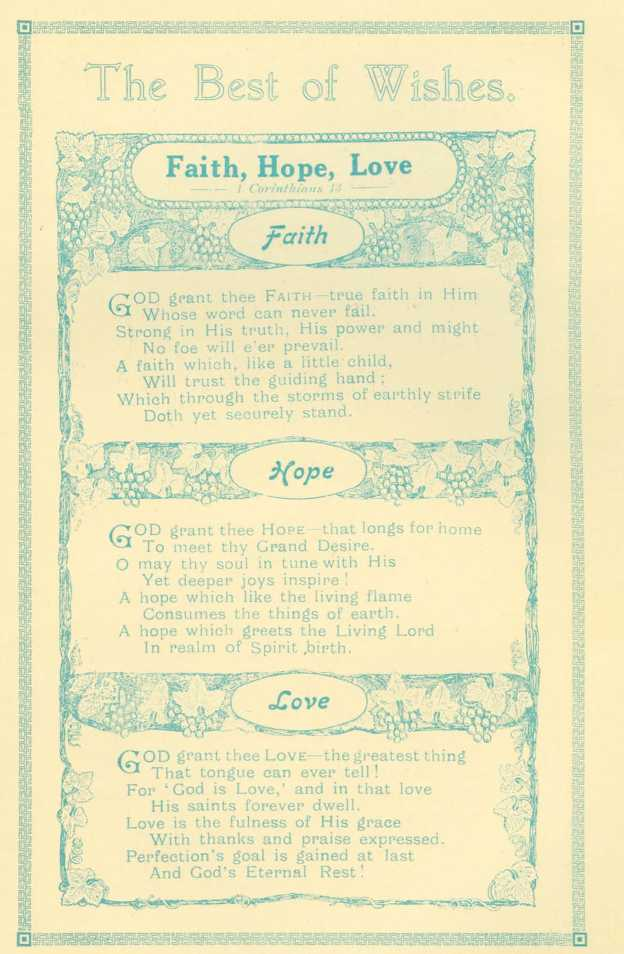41
“ The Tlisciple whom Jesus loved. ' John 13: 23.
OME seventy years ago 1 was a fisher by the Sea of Galilee. It was at sunset. How the tranquil tide bathed dreamily the pebbles. How the light crept up the distant hills, and in its wake soft purple shadows wrapped the dewy fields ! And then HE came and called me. Then I gazed for the first time on that sweet face. Those eyes, out of which shone Divinity, looked on my inmost soul, and lighted it forever. Then His words broke on the silence of my heart. His love took hold of me and claimed me for its own. There in the twilight I followed, holding fast his mantle.
Oh, what holy walks we had through harvest fields, and desolate dreary wastes ! Oftentimes He leaned upon my arm, wearied and worn : I was young and strong and so upbore Him. Lord, now I am
weak and old and feeble ! Let me rest on Thee ’ So, put Thine arm around me. Closer still ! How strong Thou art!
0, my Lord, my Lord! How bright Thou art! and yet the very same I loved in Galilee. Tis worth the hundred years to feel this bliss ! So lift me up, dear Lord, unto Thy bosom. There shall I abide.
The twilight, even now. draws on apace. Come, let us leave the noisy streets and take the path to Bethany ; for Mary's smile awaits us at the gate, and Martha's hands have prepared the cheerful evening meal. Come, James, the Master waits, and Peter, see, has gone some steps before !
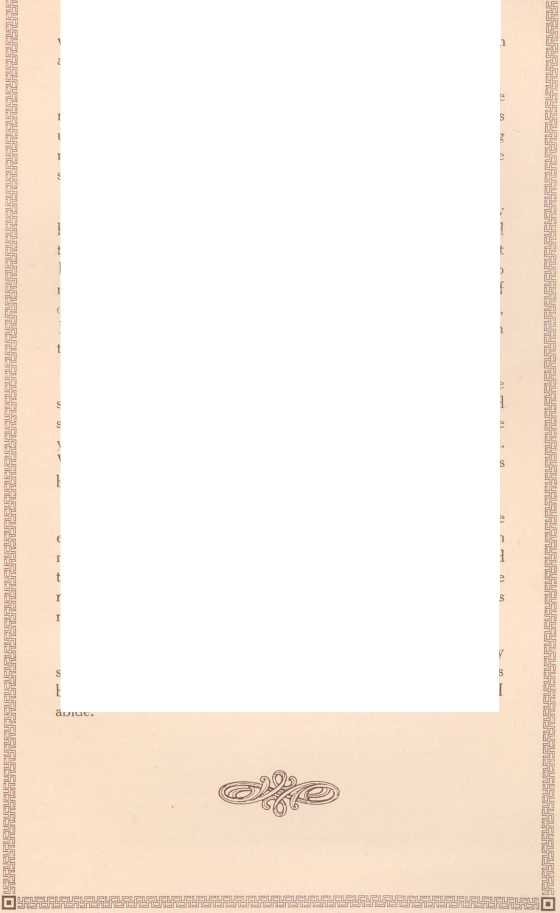What say you, friends ? that Christ has gone to His Heavenly home ! Ay, ’tis so, ’tis so, I know it all ; and yet, once more I seemed to stand upon my native hills with the Master as of old. 0, how oft I’ve seen Him bring back strength to palsied limbs I I feel He has to mine. Up ! bear me once more tn my flock ! Once more let me tell of our Saviour's love ; for by the sweetness of the Master's voice just now, I think He must be very near. Coming perhaps to break the veil which time has worn so thin that I can almost see beyond.
How dark it is ! I cannot see the faces of my flock. Is that the sea that murmurs so, or—is it weeping? Hush, my children. God so loved the world that He gave His only begotten Son : So, love ye one another. Love God and man. Amen. Now bear me back. Why call ye me the Holy John ? Nay, call me rather, Jesus Christ's beloved, and lover of my children.
Lay me down once more upon my couch, and open wide the eastern window. See, there comes a light like that which broke upon my soul at eve, when in the dreary isle of Patmos, Gabriel came and touched me. See, it grows I and hark ! How sweet that song the ransomed sing. Glory to the Lamb ! How loud it sounds ! Methinks my soul can join it now.
H^sSE
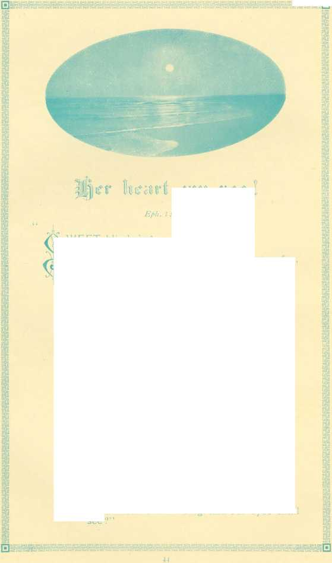V\ WEET blind singer, over the sea, Tuneful and jubilant, how can it be
■jX That the songs of gladness, which float so far, As if they fall from an evening star.
j ’ Are the notes of one who may never see Visible music of flower and tree?
How can she sing in the dark like this? What is her fountain of light and bliss?
Her heart can see, her heart can see!
Well may she sing so joyously !
For the King himself, in His tender grace Hath shown her the brightness of His face.
* * *
Dear blind sister over the sea 1
A joyous heart goes forth to thee.
We are linked by a cable of faith and song, Flashing bright sympathy, swift along : One in the east and one in the west, Singing for Him, whom our souls love best,
Sister ! what will our meeting be,
When our hearts shall sing, and our eyes shall see
How oft at night 1 turn mine eyes towards my heavenly home, And long for that blest time when Thou my Lord, shall bid me, . “ Come 1
And yet I know that only those Thy blessed face shall see. Whose hearts from every stain of sin are purified and free.
As pants the hart for water brooks, so pants my soul for Thee. Oh, when shall I behold Thy face, when wilt Thou call for me?
And oh, my Master and my Lord, I know I’m far from meet . With all Thy blessed saints in light to hold communion sweet.
I know that those who share Thy throne must in Thy likeness be, And all the Spirit's precious fruits in them the Father see.
Lord, grant me grace more patiently to strive with my poor heart. And bide Thy time to be with Thee and see Thee as Thou ail 1
Psa.lrf: J.
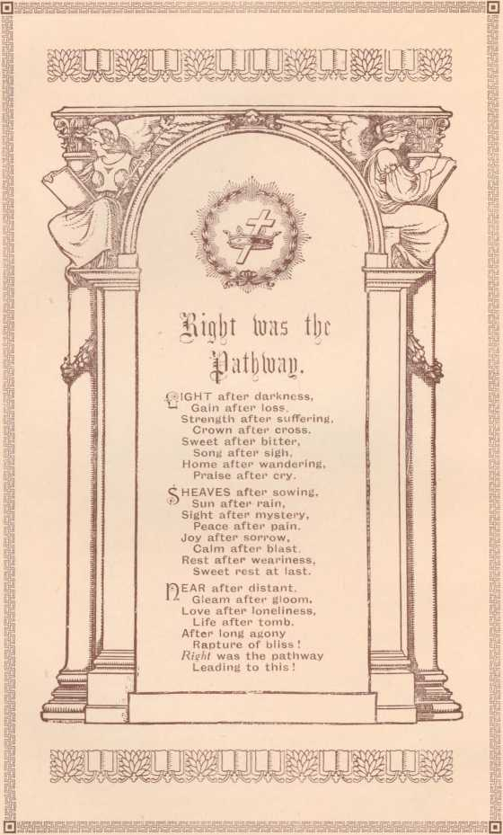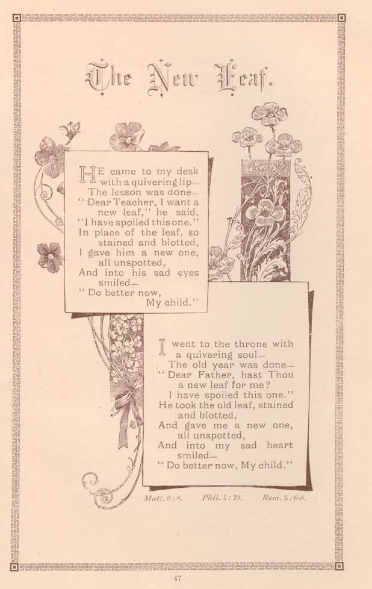said
Phil.
JE came to my desk with a quivering lip— The lesson was done— Dear Teacher, I want a
new leaf.
“I have spoiled thisone." In place of the leaf, so stained and blotted, I gave him a new one, all unspotted,
And into his sad eyes smiled —
“ Do better now, My child.”
I went to the throne with a quivering soul—
The old year was done— “ Dear Father, hast Thou a new leaf for me?
I have spoiled this one.” He took the old leaf, stained and blotted,
And gave me a new one, all unspotted,
And into my sad heart smiled—
“ Do better now, My child.”
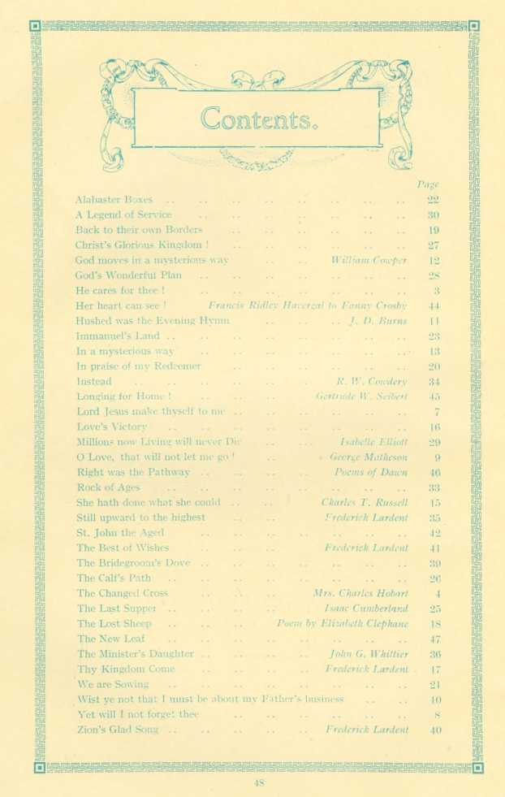John G. Whittier Frederick I.ardent
Charles T. Russell
.' redcrick Lardent
God's Wonderful Plan He cares for thee !
Her heart can see !
Isabelle Elliott George Matheson Poems of Dawn
We are Sowing .. . . .. . .
Wist ye not that T must be about my Father's: Yet will I not forget thee .. ..
Zion's Glad Song .. .. .. ..
Alabaster Boxes .. ..
A Legend of Service ..
Back to their own Borders Christ's Glorious Kingdom !
God moves in a mysterious w ay
Hushed was the Evening Hymn Immanuel's Land .. ..
In a mysterious way .. .
Tn praise of my Redeemer . Instead ., .. .. ■
Longing for Home 1 .. .
Lord Jesus make thyself to me . Love's Victory .. .. .
Millions now Living will never Di O Love, that will not let me go ' Right was the Pathway .. .
Rock of Ages .. .. .
She hath done what she could . Still upward to the highest . St. John the Aged .. .
The Best of Wishes .. .
The Bridegroom's Dove .. .
The Calf's Path.....
The Changed Cross .. .
The Last Supper .. .. .
The Lost Sheep .. .. .
The New Leaf .. .. .
The Minister's Daughter .. .
Thy Kingdom Come .. -
Mrs. Charles Hobart Isaac Cumberland Poem by Elizabeth Clephane